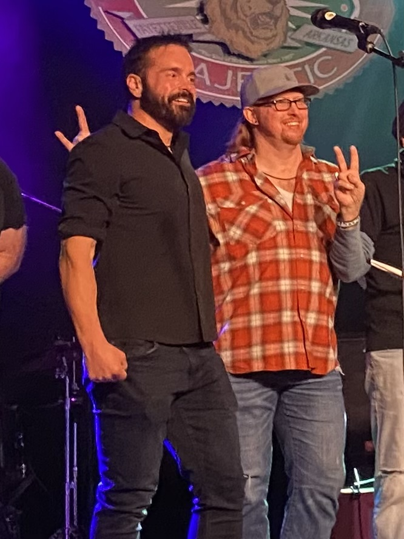
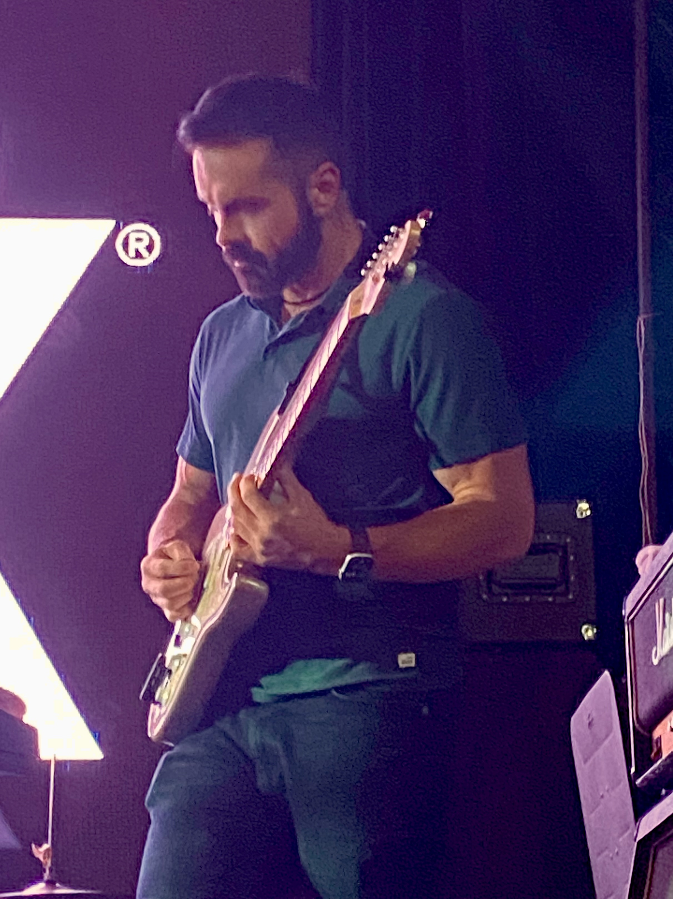

Blackberry Hollow
Acoustic Duo · Fayetteville, AR
Atmospheric. Southern. Laid-back.
Listen
Studio sessions from the rehearsal room — two guitars, one room.
About
Blackberry Hollow is Joel Farthing and Jared Berry — a two-man acoustic duo based in Fayetteville, Arkansas.
Jared is a dynamic lead vocalist and a terrific guitar player in his own right, with years of stage experience performing for crowds of all sizes. Joel brings hundreds of paid gigs worth of experience across Fayetteville — from intimate rooms to large venues — along with the professionalism and adaptability that comes with it.
Together, we play a wide range of current and classic songs, with a setlist that stretches from Noah Kahan to Dave Matthews, from The Beatles to Coldplay.
Our goal is to create an atmospheric, southern, laid-back style that's musically engaging on stage while also serving as a rich backdrop for patio and dinner service.

Setlist Flavor
A sample of the artists in our rotation — always expanding, always adapting to the room.
What We Bring
Two-Hour Set
Our standard offering — flexible, with breaks that work for your schedule.
Our Own Sound
We bring professional sound equipment, or we're happy to use house sound.
Built-In Crowd
We bring a core audience of friends and family who love supporting live music.
Book Us
We'd love to bring Blackberry Hollow to your venue. We can adapt easily to your setting — patio, dining room, stage, or somewhere in between.
Get in Touch